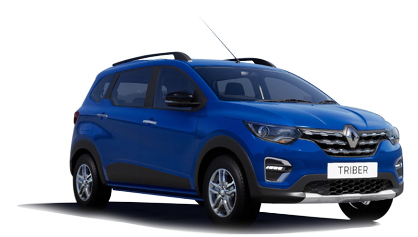

Renault Triber

The Renault Triber is everything you need from a 7-seater car.
This modular, efficient and practical vehicle seamlessly fits into your
everyday life.
Specifications:
| ARAI Mileage |
18.2 kmpl |
| Fuel Type |
Petrol |
| No. of Cylinders |
3 |
| Max Power |
71.01bhp@6250rpm |
| Transmission Type |
Automatic |
| Seating Capacity |
7 |
| Max Torque |
96Nm@3500rpm |
| Boot Space |
84 Litres |
| Fuel Tank Capacity |
40Litres |
| Body Type |
MUV |
| Ground Clearance Unladen |
182 mm |
Triber is available in 11 exciting colours:
Electric Blue, Electric Blue with Black Roof, Stealth Black, Cedar Brown, Cedar Brown with Black Roof, Moonlight Silver, Moonlight Silver with Black Roof, Ice Cool White, Ice Cool White with Black Roof, Metal Mustard, Metal Mustard with Black Roof. Sample the lookbook of the entire range and pick the colour of your everyday drive.
ULTRA-MODULAR:
The Triber gives you all the space you need for your lifestyle, with modularity
up to 7 seats and over 100 possible seating combinations.
Enhanced safety for safer drives:
double-check on safety with 15+ safety features.
One of the standout features of Triber is its safety. Suited with the latest BS6 step 2 compliant* features, it keeps you protected and assists in safer driving. Even the 4-star GNCAP rating for adults and 3-star for children cements its status as one of the safest 7-seaters.
Attractive dual tone exteriors that command attention
With robust design, attractive styling and modern interiors, the Renault Triber is ready to make a statement. Its impressive stance ensures that Triber stands apart on the road.
STYLISH INTERIORS SMARTER DRIVES:
Equipped with the latest in technology, including a 17.78 cm TFT instrument cluster, 20.32 cm touchscreen mediaNAV with Apple CarPlay™ & Android Auto™ compatibility, and a wireless charger, Renault Triber is ready to elevate your drives.
Super Spacious:
With space for up to seven people, the removable third row of seats and 625 litres of boot space, Renault Triber’s ultra-modular interior gives you comfort, flexibility and a lot of storage possibilities.